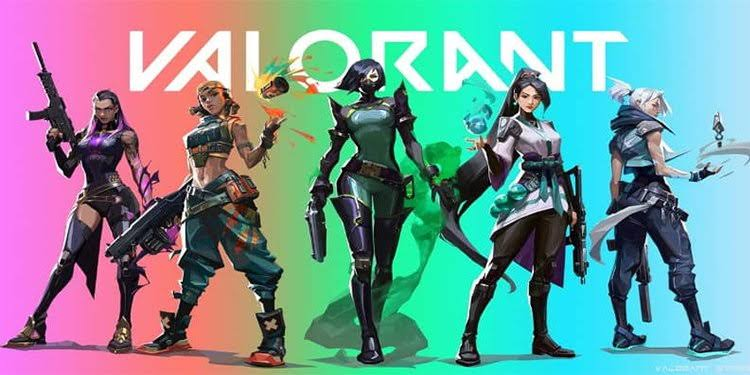
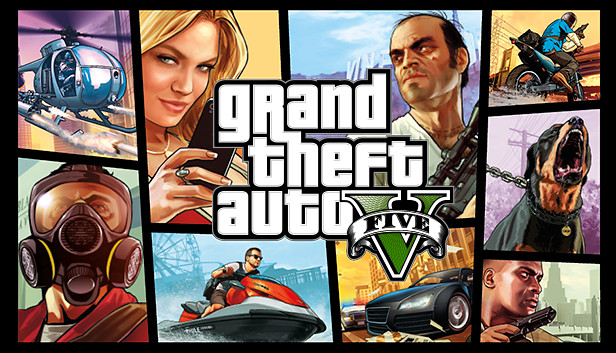
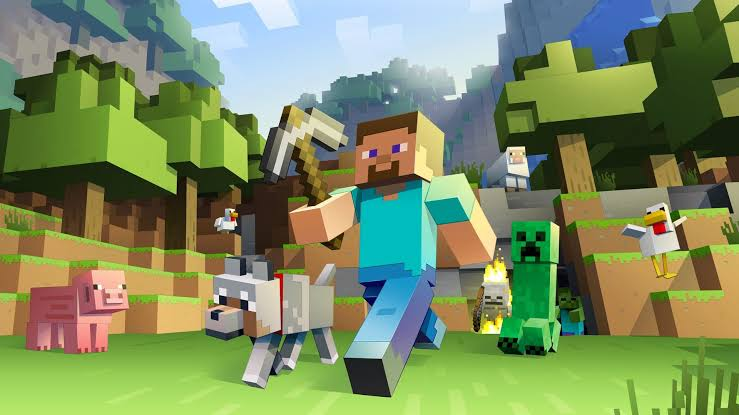
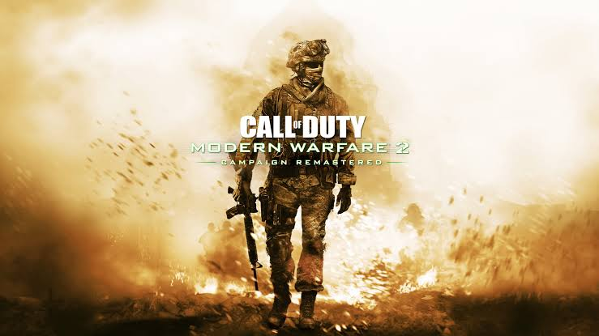
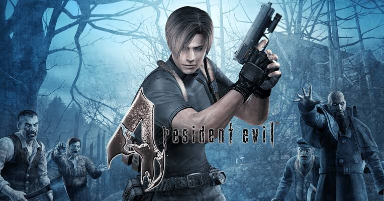

Valorant is a team-based first-person hero shooter set in the near future.Players play as one of a set of Agents, characters based on several countries and cultures around the world.In the main game mode, players are assigned to either the attacking or defending team with each team having five players on it
Download link
Grand Theft Auto V is an action-adventure game played from either a third-person or first-person perspective.Players complete missions linear scenarios with set objectives to progress through the story.Outside of the missions, players may freely roam the open world.
Download link
Minecraft is a 3D sandbox game that has no required goals to accomplish,allowing players a large amount of freedom in choosing how to play the game.However, there is an achievement system,known as "advancements" in the Java Edition of the game, and "trophies" on the PlayStation ports.
Download link
Modern Warfare's single-player campaign focuses on realism and features tactically-based moral choices whereupon the player is evaluated and assigned a score at the end of each level; players have to quickly ascertain whether NPCs are a threat or not, such as a civilian woman who is believed to be reaching for a gun, but then simply grabs her baby from a crib.
Download link
The player controls the protagonist, Leon S. Kennedy, from a third-person perspective. Departing significantly from the series' previous games, the gameplay focuses on action and shootouts with fewer survival horror elements.
Download link| Games | Rating |
|---|---|
| 1) Valorant | 7 |
| 2) GTA 5 | 9.5 |
| 3) Minecraft | 8.5 |
| 4) Call of Duty | 9 |
| 5) Resident Evil-4 | 8 |